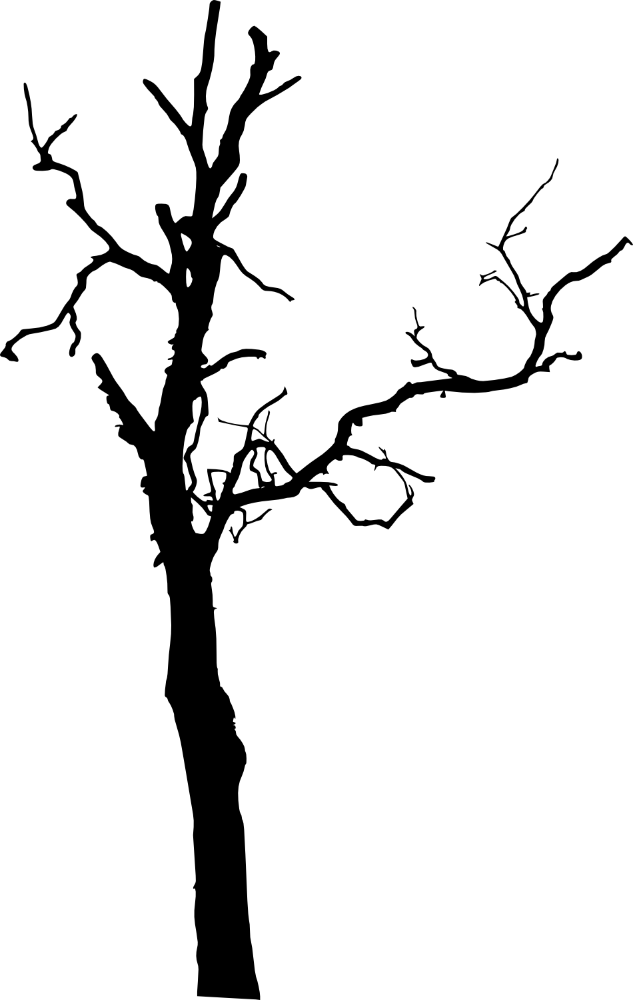

Parallax Website



Parallax scrolling websites have captivated the digital landscape with their dynamic and immersive
storytelling capabilities. This innovative web design technique involves the background moving at a
slower pace than the foreground, creating a captivating 3D effect as users scroll down the page.
The depth and motion produced through parallax scrolling offer an engaging user experience,
making the website more interactive and visually appealing.
It's particularly effective in drawing users into the site's content,
guiding them through a seamless narrative journey that can enhance brand storytelling and user engagement.
The implementation of parallax scrolling can significantly improve a website's aesthetic
appeal and interactivity. Designers often use this technique to highlight important information,
showcase product features, or tell a brand's story in a more engaging and memorable way. The technique can also be used to guide visitors' attention to calls-to-action, encouraging them to engage with the content on a deeper level. However, it's crucial for designers to use parallax scrolling judiciously to avoid overwhelming users or causing confusion.
When executed well, it not only enhances the visual appeal but also contributes to a site's
usability and storytelling effectiveness, making complex information more digestible through visual cues and interactions.
Despite its benefits, parallax scrolling is not without its challenges and limitations.
It can sometimes lead to longer loading times, potentially affecting the website's
search engine optimization (SEO) and user retention rates.
Moreover, it may not always translate well across all devices, particularly on
mobile platforms where smooth scrolling and loading speed are critical for user satisfaction.
As such, developers must ensure that parallax effects are optimized for
performance and accessibility, offering alternatives or adjustments for different devices and screen sizes.
Balancing creativity with usability and performance is key to leveraging the full potential of parallax scrolling websites,
ensuring they captivate users without sacrificing functionality or accessibility.